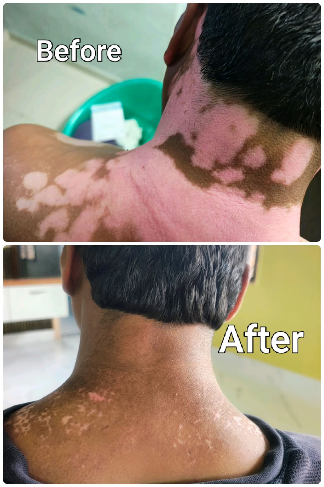
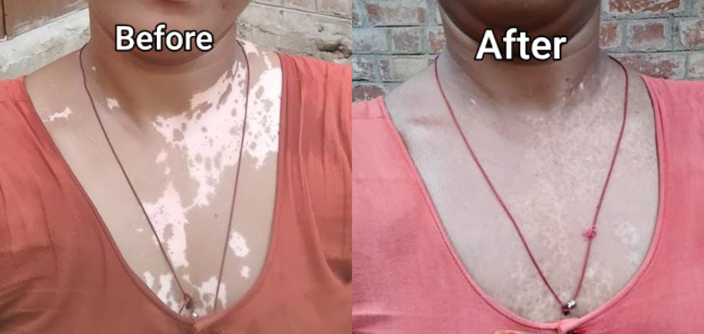
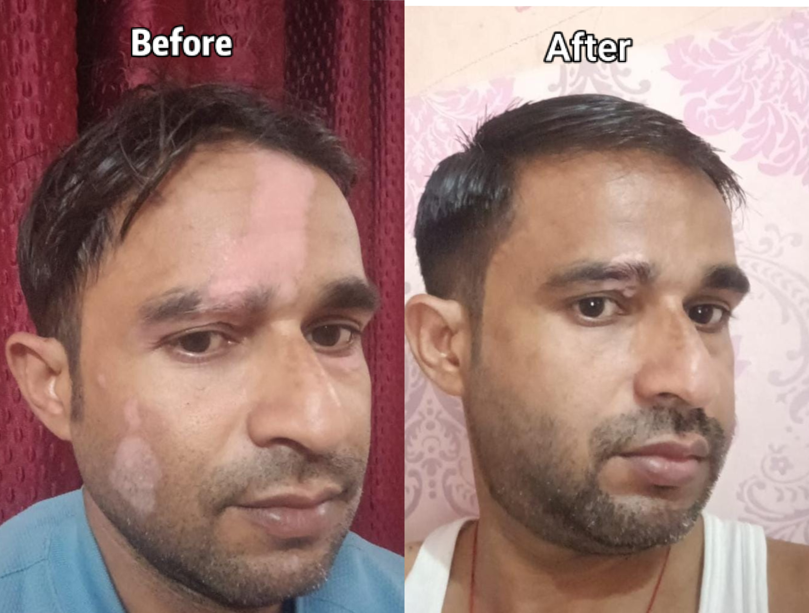

🌼
White Patches
We treat White Patches. Vitiligo and leucoderma are terms associated with white patches. Different conditions can look similar.
Welcome to the Unani Research Center, associated with Vaidya Vinit Kumar. We understand that skin conditions can bring many questions and concerns. Our aim is to provide Unani medicines and a respectful space to discuss white patches (vitiligo/leucoderma), psoriasis and piles, and help people understand possible next steps.
Our center provides Unani medicine for vitiligo, psoriasis and piles. Every person's needs are different, and an appropriate medical assessment can help determine the right course of action. We don't just give medicines, we create fully customised medicines according to the patient's skin type.
Questions are welcome. Read the contact and medical information below.



Clear information, respectful communication and a patient-first approach.
The Unani Research Center is associated with Vaidya Vinit Kumar. Our doctor has 45 years of experience and has treated more than one lakh patients.
According to the center's policy, you can call or message to ask questions without a charge or a fixed limit on how many times you contact the practitioner. Consultations, medicines, tests or in-person services have separate costs.
Every person is different. No treatment outcome can be guaranteed. For new or changing skin patches, seek an assessment from us.
Learn about the conditions you would like to discuss.
We treat White Patches. Vitiligo and leucoderma are terms associated with white patches. Different conditions can look similar.
We treat psoriasis. A long-term inflammatory skin condition.
We treat piles. Rectal bleeding or persistent pain should be assessed rather than automatically assumed to be piles.
Check where your medicine parcel has reached.
Once your parcel is dispatched, message us on WhatsApp and ask for your consignment number, which is given by India Post. We will share it with you.
Then click the button below. It will open the India Post website, where you can enter your consignment number and see your parcel tracking.
Tap any row to know more.
| What you get | ✔ Our Center | ✖ Other Centers |
|---|---|---|
| 💰 Cost | ✔ Affordable, fair charges | ✖ Often higher costs |
| We keep our charges fair so that treatment stays within reach for more families. | ||
| 🏠 Report From Home | ✔ Through WhatsApp, no clinic visit | ✖ Often need a visit |
| Just send clear pictures of the affected area and receive your report on WhatsApp. | ||
| 🤝 Respect & Confidence | ✔ Respectful discussion that builds confidence | ✖ Often rushed consultations |
| We listen patiently, answer your questions and help you understand your next steps. | ||
| 📞 Appointments, Calls & Messages | ✔ Free and unlimited | ✖ Often charged |
| Booking appointments, calling and messaging us costs nothing, any number of times. | ||
| 🌿 Type of Medicine | ✔ Unani medicines | ✖ Often allopathic (English) medicines |
| We provide Unani medicine rather than allopathic or English medicine. | ||
| 🧪 Customised Medicine | ✔ Made for your skin type | ✖ Often the same for everyone |
| We do not just give medicines. We create fully customised medicines according to the patient's skin type. | ||
| 🩺 Conditions Treated | ✔ Vitiligo, psoriasis and piles in one place | ✖ Often separate doctors needed |
| White patches (vitiligo/leucoderma), psoriasis and piles are all discussed and treated at our center. | ||
| 👨⚕️ Direct Guidance | ✔ Personal guidance from Vaidya Vinit Kumar | ✖ Often through staff |
| You can discuss your concerns directly and get patient guidance and traditional care. | ||
| 📦 Parcel Tracking | ✔ Sent by India Post, track it yourself | ✖ Tracking often not offered |
| Ask us for your consignment number on WhatsApp and track your parcel on the India Post website. | ||
Call, send a WhatsApp message, or visit the YouTube channel.
Choose your preferred way to connect.
Visit the channel for videos and information.
In this center calls and messages for asking questions, booking appointments, calling or messaging are free and for unlimited time.
Vitiligo is one possible cause, but other skin conditions may also cause lighter patches.
Use the Call or WhatsApp buttons, or visit the linked YouTube channel.